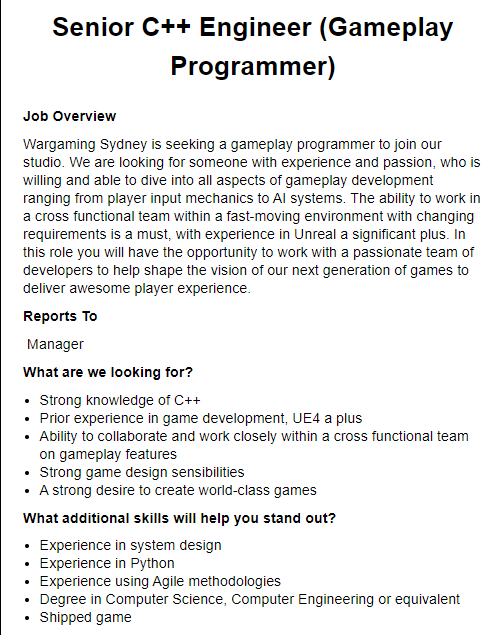

IIT Assignment 1 - Shaun Lottey
Interest in IT
My primary interest in IT stems from the desire to understand how we can use technology to better our lives and the lives of others. I would also be lying if I wasn’t interested in a higher paying career.
My interest was sparked at a very young age by my father who was always an avid technologist/tinkerer who got me started on a Commodore 64 around the age of 5.
Most of my experience has stemmed from that event (I remember having to manually write out code before you could run simple games on that machine). I have since used computers nearly every day doing everything from web design, web coding and eventually in my later years writing simple programs and even some game programming in C++ and using the Unreal 4 engine.
I chose to study at RMIT as friends from Melbourne had highly recommended it and it has a great reputation even on the world stage. I am hopeful that with a degree from RMIT I will be more likely to be considered when I eventually jump into IT career field.
I expect by the end of my studies I will have a much broader knowledge of the field and this in turn will allow me many more prospective avenues of employment.

Job Title: Senior C++ Engineer (Gameplay Programmer)
Desc: This position entails writing the backbone c++ code that would be used from everything from managing player controls, AI, networking functionality and gameplay mechanics. This is particularly of interest to me more so than the design aspects as I prefer to think and work in a more logical fashion rather than creative. Working in video game development is a long time dream of mine.
REQUIRED SKILLS
The job is asking for someone with relevant programming ability in C++, and for someone with knowledge of how games work and how to design them in a clear concise manner to maximise performance and stability. They also h2ly prefer someone with formal qualifications such as the Bachelor of Information Technology, and ideally someone who has previously worked on similar projects. They also stress an ability to work in teams and collaborate with departments of the design process.
CURRENT SKILLS
I currently possess beginner to medium knowledge of C++ and video game design principles. I have worked in smaller (mostly unpublished) design teams working on little hobby projects. I have previously worked on a small RPG development team of <5 as a teenager with people from around the world and more recently started practicing programming 3D environments in the Unreal 4 engine. No games I have worked on unfortunately were ever shipped given the age of our team and I hold no formal qualifications nor have I worked in a formal IT environment.
THE PLAN
My plan to achieve the required skillsets involves continuing my studies at RMIT while simultaneously working on hobby projects at home and further learning other programming languages and concepts which may be of advantage in securing me a future job such as this.
MYER-BRIGGS TEST RESULT
My personality type is: Protagonist (ENFJ-A)
What this means to me: According to the results and in my own opinion also, I tend to step up to leadership roles when necessary and care about my team’s problems as much as my own.
I believe this will influence me in teams by allowing me to work harmoniously with others but also give me the extra drive to say when I believe something could be done a better way. I should however take into account just because I believe something could be done better It doesn’t necessitate that I’m right. I have found the best outcomes of teamwork always come from a democratic approach regardless of who is in charge.
LEARNING TEST RESULT
My learning style is: Auditory (45% Auditory, 20% Visual, 35% Tactile)
What this means to me is that I learn primarily by listening rather than just reading information.
I believe this will influence me in teams in a way where I will benefit from listening to others ideas and suggestions. I believe this will make forming teams easier as I will be able to take on others ideas with much more ease than some people.
CREATIVITY TEST RESULT
My creativity level is: High (59-80)
What this means to me is that I have a relatively good creativity level.
I believe this will influence me in teams by allowing me to make suggestions and hopefully inspire others with my ideas. This should hopefully also make joining teams easier as I can bring more to the table when others arent feeling up to it.
PROJECT SUMMARY
For my project idea, I was considering a smart phone or even desktop based application that would be able to monitor and report on water usage in a person’s home or business. This would work by having hardware such as a Raspberry Pi or similar affordable equivalent that would be fitted to the water meter equipped with a wireless connection to your home network.
You could then provide periodic or user requested updates on the total consumption or set alerts to warn you if you are using too much to the app, assuming you are trying to be water wise.
MOTIVATION
As many Australians well know, we are quite a dry country and more so recently have been experiencing tremendous drought conditions, especially in many parts of rural NSW and QLD.
According to the Bureau of Meteorology, as of 2018 the total accessible storage capacity in our ground water supply was about 81,000 GL (giga litres). While that may sound like an obscene amount of water, it is still a finite supply. In that same year we only saw an average rainfall of 441mm which itself was over 26% less than the previous year.[1] If this trend continues combined with our ever-increasing population, we may soon be faced with dwindling water supplies. It is because of this I believe the ability for people to monitor and control their water usage as a result should be of paramount concern before it becomes an existential threat.
GENERAL DESCRIPTION
As mentioned in my summary this project would have two main constituent parts.
You would have a device that is physically attached to your water meter using an oscillating piston, which would be moved by the waters displacement, and connected to this a small processing device such as a Raspberry Pi or Arduino microcontroller with Wi-Fi functionality that would allow it to send updates to an app via your home network giving you the ability to directly monitor how much water is passing through.
At the other end of this, the software would record this usage in a fashion similarly to how devices like your mobile phone can record mobile data used on the 4/5G networks. You would perform an initial setup such as listing how many end users there are on a property, whether they have water intensive items such as pools or spas.
The software would then record usage in real time allowing you to break down your usage by hours, days, months or years. It would also include a historical record of your usage so you could see if you were using more or less water at given times of the year and adjust accordingly.
Another benefit to this would be that should you decide to buy water saving devices, such as efficient taps or shower heads you would be able to see if and how much of a difference they are truly making.
Other features could include sending push alerts to you if you approach a user determined upper limit whether it be just for the sake of trying to save water or reduce your water bills.
A social option could also be implemented allowing users to opt in to having their readings anonymously shared with others using this software in your area giving people a concise idea of how much they are using in comparison to one another, and ideally even incentivise people to use less by sending encouraging reminders congratulating you on being more efficient than your neighbours.
The psychological benefit of something such as this can be seen in other social tracking devices’ software such as sharing your FitBit’s progress with your friends.
TOOLS & TECHNOLOGIES
For this to work you would require a computer or smartphone device on which to install the software, a wirelessly enabled router on your home network and the physical processing unit which would need to be installed on your meter, most likely by a certified technician (possibly only due to the legality surrounding water meters as public infrastructure).
SKILLS REQUIRED
To accomplish this project, I would need to be able to program the microcontroller device and accompanying software in a language, probably C++ as that is what I am already comfortable in. I would be using the Microsoft Visual Studio software package for this part.
I would also need to brush up on microcontrollers in general as I have yet to really indulge in that hobby. Finding the physical hardware would be easy as microcontrollers are cheap, and largely available across major cities, especially one such as mine in Sydney.
IN SUMMARY...
Should the project be successful, I would be able to monitor my own usage and hopefully using the information it could provide adjust my family’s and my own habits to save ourselves not only water but reduce our annual costings to suit. This would be of particular importance to us as not only do we consume a larger amount than normal due to having a pool but we are already on water restrictions.